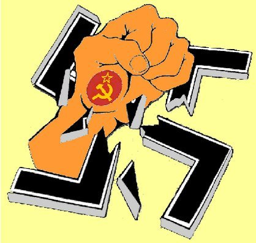

Борьба коммунистов
с империализмом как источником войн

Третий Коммунистический интернационал вёл большую теоретическую работу, в том числе предсказал фашизм, дал определение фашизму. Глубоко научным, классическим марксистским определением фашизма явилось определение, представленное в резолюции XIII пленума ИККИ и повторенное на VII Конгрессе Коминтерна Георгием Димитровым, докладчиком по этому вопросу (так называемое «димитровское» определение):
«Фашизм у власти — это открытая террористическая диктатура наиболее реакционных, наиболее шовинистических, наиболее империалистических элементов финансового капитала, особая форма классового господства буржуазии… Фашизм — это не надклассовая власть и не власть мелкой буржуазии или люмпен-пролетариата над финансовым капиталом. Фашизм — это власть самого финансового капитала. Это организация террористической расправы с рабочим классом и революционной частью крестьянства и интеллигенции. Фашизм во внешней политике — это шовинизм в самой грубейшей форме, культивирующий зоологическую ненависть против других народов».
Фашисты, действия которых полностью подтверждали данное определение, руководствуясь своими классовыми интересами, создали Антикоминтерновский пакт с целью не допустить дальнейшего распространения коммунистической идеологии в мире (сначала в 1936 г. Германия и Япония, затем в 1937 г. Италия, а позднее — ещё ряд государств, в которых к власти пришли правительства, разделяющие идеологии гитлеровского и итальянского фашизма, либо правительства, крайне отрицательно относящиеся к СССР и коммунизму в целом: Венгрия и Маньчжоу-го, Испания с правительством генерала Франко)
25 ноября 1941 года Антикоминтерновский пакт был продлён на 5 лет, тогда же к нему присоединились Финляндия, Румыния, Болгария, а также существовавшие на оккупированных немцами территориях марионеточные правительства Хорватии, Дании, Словакии и образованное японцами на оккупированной ими части Китая правительство Ван Цзин-вэя).
Коминтерн дал бой фашизму ещё на этапе продвижения коричневых к власти в Испании и Германии. Была разработана тактика народных фронтов и, по большому счёту, основными противниками Гитлера и его Антикоминтерновского пакта во Второй Мировой войне были Советский Союз и Коминтерн. Коммунисты внесли решающий вклад в разгром фашизма и его германской разновидности — нацизма. Коммунисты большинства стран были во главе партизанской войны и Движений Сопротивления.
Вопрос роспуска Третьего Коминтерна требует отдельного рассмотрения, но ясно одно, что главным результатом его деятельности явился разгром фашизма и создание мировой социалистической системы с мощнейшим организационным ядром — Союзом Советских Социалистических республик и странами СЭВ.
Поражение социализма в СССР и странах Восточной Европы имело широчайшее воздействие на ситуацию во всём мире. Во-первых, в отсутствии примеров социалистических стран капитал перешёл в наступление на права трудящихся. А, во-вторых, во внешней политике мировой империализм, и прежде всего его ударный отряд в лице империалистов США и стран НАТО, стал действовать более разнузданно, агрессивно, не оглядываясь на нормы международного права, не говоря уже о мнении мирового сообщества. Примером этому служат расправы над Югославией, Афганистаном, Ираком, Ливией, сегодня — Сирией, угрозы в адрес КНДР и Ирана.
Очередной глубочайший мировой экономический кризис капитализма, его обострение с 2008 г. толкали империализм к поиску выходов на путях эскалации внешней агрессии и силового решения вопросов расширения рынков и усиления влияния в стратегически важных регионах, тем более что уже не было противодействующего фактора – мировой социалистической системы. Наша партия в своем анализе текущей политики империализма исходит из определения фашизма, данного Коминтерном: «Фашизм — открытая террористическая диктатура наиболее реакционных, наиболее шовинистических, наиболее империалистических элементов финансового капитала, особая форма классового господства буржуазии».
Некоторые теоретики и партии с данным определением не согласны и высказываются, по сути дела, за отказ от использования этого фундаментального научного определения, которое было дано 70 лет назад в период становления фашизма, противопоставлявшего себя в первую очередь первому в мире социалистическому государству, а также и государствам буржуазной демократии, с которыми фашистские государства намеревались в интересах своего финансового капитала вести войну за рынки сбыта и источники сырья. С тех пор ни сущность империализма, ни сущность финансового капитала не изменились, не исчезли и его намерения при известных обстоятельствах переходить от использования буржуазной демократии для осуществления своих интересов к открытой террористической, то есть фашистской диктатуре.
Если подходить не схоластически, а творчески-диалектически, необходимо признать, что Коминтерн верно определил фашизм, дав определение фашизма как такового, а не какого-то особого фашизма того времени. Тем более, что на международных встречах коммунистических и рабочих партий мы вместе констатировали, что природа империализма и сущность финансового капитала остается той же самой, что и в двадцатом веке, поэтому проявления фашизма могут меняться, но его сущность, а, следовательно, определение фашизма, верно и сегодня и позволяет давать правильную оценку самым современным политическим событиям.
Фашизм состоит в отбрасывании демократических форм буржуазного господства и переходе к открытому буржуазному террору. В современном мире большинство буржуазных государств во внутренней политике используют различные формы буржуазной демократии, воздерживаясь от осуществления диктатуры в открытой террористической форме. Другое дело – на международной арене, где осуществляется продолжение внутренней политики как уже политики международной. После крушения СССР международный империализм во главе с Соединёнными Штатами Америки не просто увеличил свою агрессивность, а стал открыто попирать нормы международного права и игнорировать даже буржуазную законность. Ядром сил империализма сегодня выступает именно финансовый капитал, причем с гораздо большим удельным влиянием, чем в середине двадцатого века. Фашизм — это одна из возможных реакций империализма для спасения капиталистического строя от опасностей социалистических революций, особенно в период кризисов. Поэтому фашизму органически присущи откровенный антикоммунизм и последовательная антирабочая политика. При этом фашизм для оболванивания народа использует инструмент широкой и активной социальной демагогии. Все эти признаки на сегодняшний день наглядно присутствуют в политике империализма и сплошь и рядом проводятся руками современной социал-демократии.
Надо различать фашизм как систему идеологических установок, и фашизм как практическую государственную политику.
Идеологические проявления фашизма сегодня видны во всех странах империализма как по отдельности, так и в их общей политике. Достаточно привести примеры антикоммунистических законов в странах Европы (Латвия, Литва, Эстония, Венгрия, Чехия, Молдова и др.), а также попытку ПАСЕ устроить судилище над коммунизмом, нагло и лживо попытавшись поставить коммунизм на одну чашу весов с фашизмом — мол, это все якобы некий тоталитаризм. В России антикоммунизм проявляется в переписывании истории, официальной антисоветской пропаганде, переименовании городов, улиц, отмене праздников, знаменательных для трудящихся, утверждении в качестве государственного флага того, что несли воевавшие на стороне Гитлера предатели.
Определяющим признаком фашизма как политики является отбрасывание демократических институтов и применение открытых террористических методов государственной политики. Сегодня в своей внутренней политике США и страны НАТО сохраняют, хотя и в урезанном виде, элементы буржуазной демократии, а вот во внешней политике они попирают все демократические нормы. Говоря словами В.И. Ленина, «перед нами совершенно нагой империализм, который не находит нужным даже облачить себя во что-нибудь, полагая, что он и так великолепен». Империализм в своей внешней политике, которая является составной частью буржуазной диктатуры, которую он осуществляет, все чаще прибегает к мерам открытого насилия, кровавого террора. Ряд событий, характеризующих это явление, мы уже называли: Югославия, Ирак, Ливия, Сирия. Международный финансовый капитал сегодня настойчиво пытается поставить в этот ряд и Украину.
Особую опасность искусственной эскалации напряженности на Ближнем Востоке придает проведение со стороны крупнейших империалистических государств в этом регионе политики фашизма. Эту ситуацию сегодня наиболее точно отражает научно обоснованный и устоявшийся в российской политической публицистике термин — фашизм на экспорт. Фашизм на экспорт — это неприкрытая, игнорирующая законы и нормы международного права террористическая империалистическая политика насилия и кровавого решения вопросов обеспечения интересов мирового империализма, ядром которого выступает финансовый капитал. Мы не должны закрывать глаза на эту современную форму фашизма.
К сожалению, некоторые товарищи и внутри России, и в других странах, в том числе и представители некоторых коммунистических партий пока еще не принимают такого вывода, утверждая, что определение фашизма, на котором этот вывод базируется, якобы не вполне корректно. При этом они совершенно правильно говорят, что не любое насилие империализма является фашизмом, что факты империалистической агрессии были и во времена СССР. Действительно, и до появления фашизма и после его разгрома во Второй мировой войне империалистические силы совершали интервенции и войны. Была оккупация Палестины, сирийских, ливанских территорий, было оккупировано 40% территории Кипра, по решению ООН была развязана империалистическая война в Корее, была империалистическая война во Вьетнаме. Империалистами были совершены сотни преступлений в Африке, Латинской Америке, а также в Европе. В Греции было империалистическое военное вмешательство Великобритании, а затем США, и кровавая гражданская война. Почему мы те агрессии не относим к фашизму, а после краха СССР и социалистического лагеря приняли это определение — «фашизм на экспорт»? Мол, это доказывает не существование «фашизма на экспорт», а агрессивность империализма, который становится все более реакционным.
Кратко отвечаем — некоторые из этих агрессий мы как раз относим к фашизму (например, в Греции), а другие не относим, потому, что они не подпадают под определение фашизма. Остановимся на этом подробнее.
Повторим, что определяющим признаком фашизма как политики является отбрасывание демократических институтов и применение открытых террористических методов государственной политики. И во времена СССР с точки зрения научного определения, проявления фашизма безусловно были. Например, в Чили государственная власть была у фашистов, то же можно сказать о режиме черных полковников в Греции.
Фашизм — это открытая террористическая диктатура наиболее реакционных элементов финансового капитала, но не обязательно своего, местного и совсем не обязательно устанавливаемая надолго. Чаще диктатура буржуазии вскоре вновь скрывается под покровом буржуазно-демократических форм.
В новейшее время в России фашизм проявился в октябре 1993 г., через расстрел парламента. Диктатура финансового капитала, проведя с помощью фашизма нужную империализму операцию, может снова облачиться в одежды буржуазной демократии, поскольку и фашизм, и буржуазная демократия только формы осуществления диктатуры буржуазии.
Во времена СССР буржуазная демократия (диктатура буржуазии) вынуждена была много больше, чем сегодня, ориентироваться на демократические нормы и международное право, гораздо реже использовать фашистскую политику.
Самого тщательного рассмотрения заслуживает вопрос: а не делим ли мы империалистические страны на «плохие» («фашистские», «неофашистские») и «хорошие»? К тому же призыв к формированию «антифашистских фронтов», якобы в бесклассовом направлении со всеми «прогрессивными и честными людьми» по мнению ряда товарищей весьма похож на антиамериканскую пропаганду, которую можно услышать от многих оппортунистов, начиная от адептов Чавеса и кончая пропутинскими агитаторами в России. Не опасна ли такая позиция для коммунистического движения и рабочего класса из-за создания путаницы при формировании линии якобы «оздоровления» империализма путем отмежевания от «фашистских сил»? Не звучит ли здесь призыв к объединению с другими силами, не имеющими никакого отношения к делу социализма? Не возникает ли по существу, во имя борьбы с фашизмом риск укрепления сил, поддерживающих сотрудничество с оппортунизмом, социал-демократией, с частями буржуазного класса? Не открывает ли это путь для выбора не самого плохого империалиста? То есть, в случае регионального или тотального военного конфликта, коммунистическое движение что, должно будет поддержать конкретные империалистические державы, во имя того, что другие являются «фашистскими»? Ведь В.И. Ленин во многих своих произведениях подчеркивал, что «рабочий класс, если он сознателен, ни за одну группу империалистских хищников стоять не может» (там же, стр. 335–336). Вопросы вполне законные и понятные, хотя и непростые. Требуют ответов по существу.
Отвечаем: коммунистическое движение, не выступая ни за одну империалистическую группировку, должно, исходя из интересов рабочего класса и обеспечения более благоприятных условий для развертывания его классовой борьбы, выступать против фашистских проявлений империализма, как это делали партии, входящие в Коминтерн и Советский Союз, вступивший во временный союз с антифашистскими державами для скорейшего разгрома фашизма. Игнорировать этот исторический опыт и эту коммунистическую практику, недооценивать ее было бы совершенно недопустимо. Мы не за какую-то группировку, а говорим, что с точки зрения защиты насущных и долговременных интересов рабочего класса надо выступать против фашизма. И если сумеем, то направить какие-то буржуазно-демократические движения против фашизма. Причем мы направляем против фашизма по определению Коминтерна! Кто согласен, тот нам союзник. Антиамериканское и антиимпериалистическое направление нельзя называть бесклассовым в условиях, когда американский финансовый капитал проводит одну за другой операции по уничтожению буржуазно-демократических режимов в других странах путем открытой террористической диктатуры и отбрасывает народы этих стран на стадии, гораздо менее благоприятные для совершения социалистической революции, чем те, на которых они находились до фашистского вмешательства.
Мы не делим империализм на плохой и хороший, мы говорим, что фашизм — это продукт империализма, форма реализации диктатуры буржуазии, но эта форма совсем не обязательная для всех империалистических государств и во все времена, и мы это должны понимать и видеть. Во Вторую Мировую войну империализм был и в Германии, и в Англии, и в США, но мы же не говорим, что империализм, воевавший с Гитлером, хороший, но говорим, что они были союзниками СССР по борьбе с фашизмом. Вбивать клин в лагерь империализма по этой линии — против фашизма, как это делал СССР, сегодня тоже возможно и необходимо, а игнорировать соответствующий успешный исторический опыт совершенно недопустимо.
Против фашизма надо поднимать и буржуазную демократию, так как фашизм давит демократию. Сталин говорил, что втоптанное в грязь знамя демократии больше некому поднять, кроме коммунистов.
Конечно, надо ответить и на такой несправедливый упрек нам, как якобы разрыв рассмотрения политики империалистических государств на внешнюю и внутреннюю. И внутренняя, и внешняя политика любого империалистического государства направлена на осуществление диктатуры империалистической буржуазии, и в этом их единство и неразрывность. Поэтому В.И. Ленин и подчеркивал: «Нет более ошибочной и более вредной идеи, чем отрывание внешней от внутренней политики. Как раз во время войны чудовищная неправда такого отрывания становится еще чудовищнее. А со стороны буржуазии делается все возможное и все невозможное, чтобы внушить и поддержать эту идею» (Полн. собр. соч. Т. 32, стр. 335).
Со всей ответственностью перед товарищами коммунистами отвечаем, что мы ни в коем случае не отрываем внешнюю политику от внутренней. Наоборот, мы подчеркиваем, что фашизм — внутренний продукт империализма, но реакционная сущность империализма может проявляться внутри страны и во внешней политике по-разному. Мы констатируем все более активные попытки американского и западноевропейского финансового капитала обеспечивать его интересы во внешней сфере фашистскими методами открытого террора. (Если бы немецкие национал - социалисты не проводили внутреннюю террористическую политику, а всю агрессию направляли бы на внешнюю сторону, то они не перестали бы быть фашистами). Продо‚орые товарищи Рё внутри Р РѕСЃСЃРёРё, Рё РІ РґСЂСѓРіРёС… странах, РІ том числе Рё представители некоторых коммунистических партий РїРѕРєР° еще РЅРµ принимают такого вывода, утверждая, что определение фашизма, РЅР° котором этот вывод базируется, СЏРєРѕР±С‹ РЅРµ вполне корректно. РџСЂРё этом РѕРЅРё совершенно правильно РіРѕРІРѕСЂСЏС‚, что РЅРµ любое насилие империализма является фашизмом, что факты империалистической агрессии были Рё РІРѕ времена РЎРЎРЎР . Действительно, Рё РґРѕ появления фашизма Рё после его разгрома РІРѕ Второй РјРёСЂРѕРІРѕР№ РІРѕР№РЅРµ империалистические силы совершали интервенции Рё РІРѕР№РЅС‹. Была оккупация Палестины, СЃРёСЂРёР№СЃРєРёС…, ливанских территорий, было оккупировано 40% территории РљРёРїСЂР°, РїРѕ решению РћРћРќ была развязана империалистическая РІРѕР№РЅР° РІ Корее, была империалистическая РІРѕР№РЅР° РІРѕ Вьетнаме. Р |